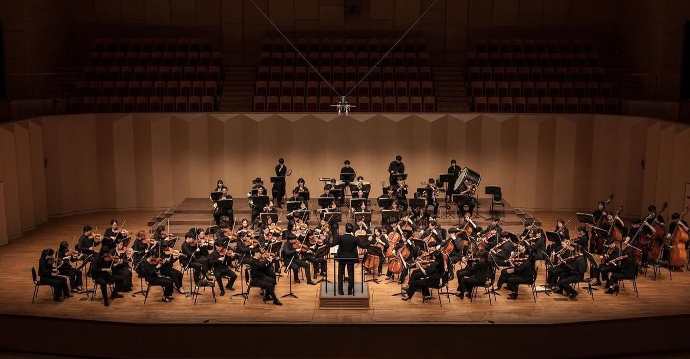
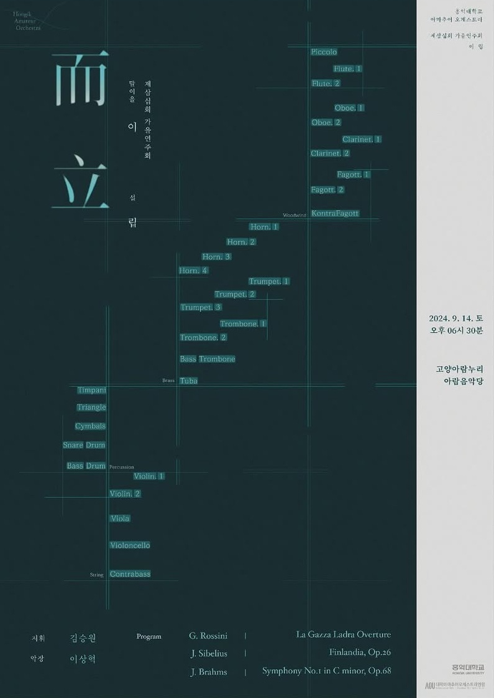
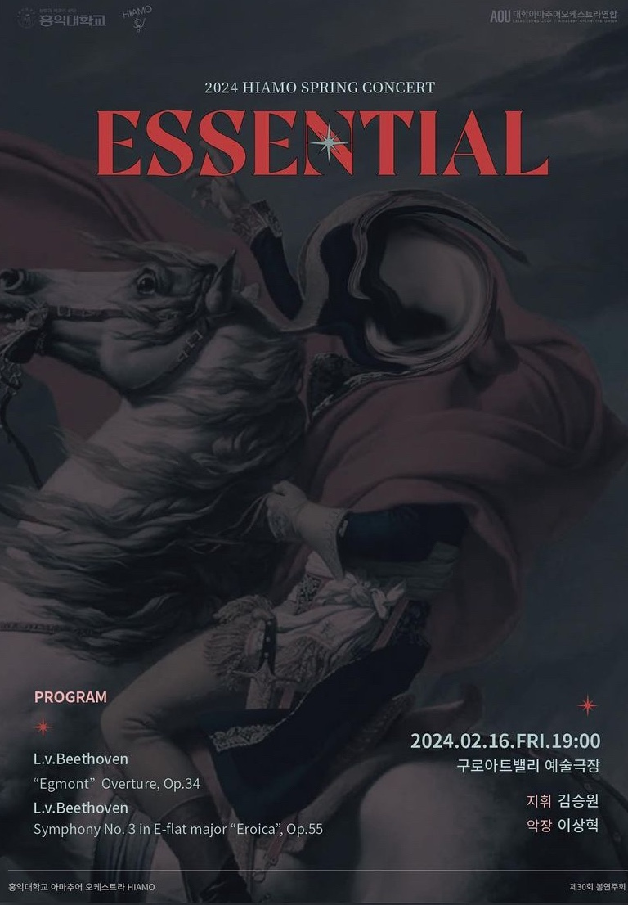
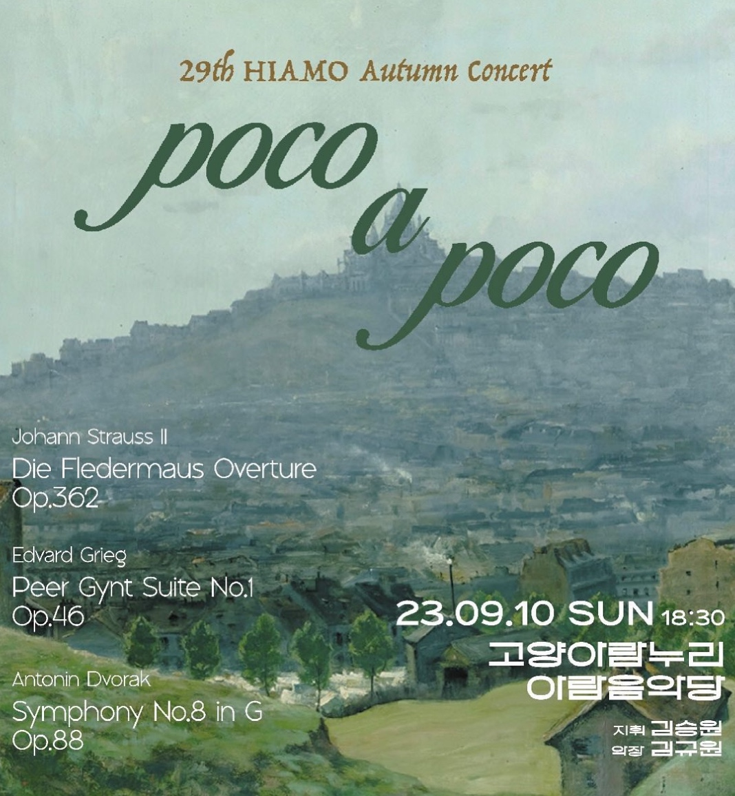
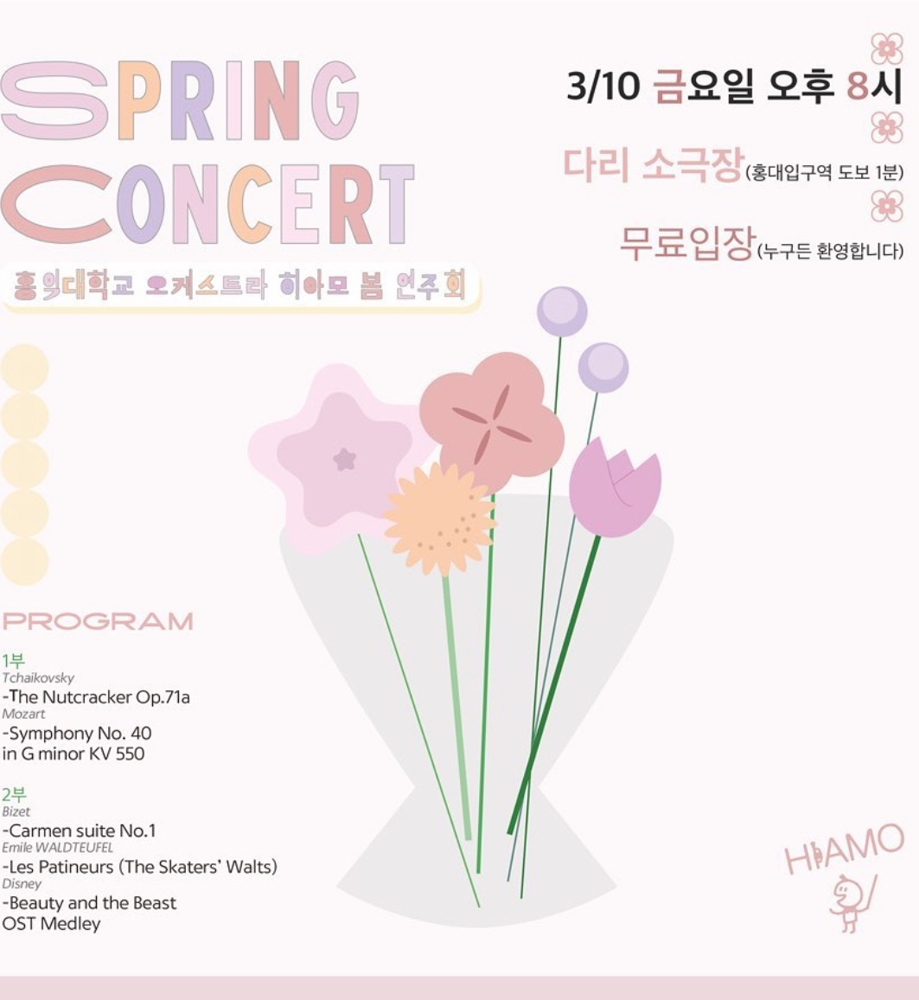
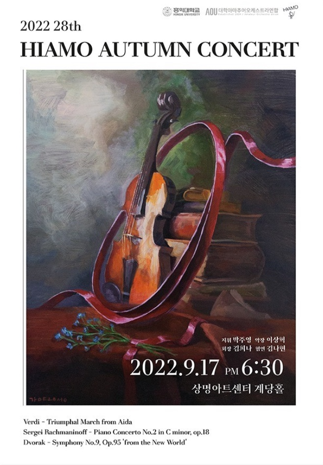

“함께 연주하며 만들어가는 하모니를 통해 깊은 감동을 전하는 오케스트라 동아리"
홍익대학교 아마추어 오케스트라 동아리 '히아모(HIAMO)'는
1994년에 창단된 중앙동아리로,'HongIk Amateur Orchestra'의 약자입니다.
히아모는 봄·가을 정기 연주회, 뮤직캠프, 향상음악회 등 다양한 음악 활동을 통해
단원들의 실력 향상과 친목 도모를 추구합니다.
특히 향상음악회에서는 영화나 애니메이션의 OST 등 다양한 장르의 음악을 앙상블로 연주하며,
클래식 음악의 대중화에 기여하고 있습니다.
다양한 악기 파트로 구성된 단원들이 화음을 맞추며
하나의 곡을 완성해가는 과정에서 음악의 즐거움과 협동의 가치를 경험할 수 있습니다.
음악에 대한 열정이 있는 홍익대학교 학우라면 누구나 참여할 수 있으며,
초보자도 파트장의 지도를 통해 악기 연주를 배울 수 있습니다.
“함께 연주하며 만들어가는 하모니를 통해 깊은 감동을 전하는 오케스트라 동아리"
홍익대학교 아마추어 오케스트라 동아리 '히아모(HIAMO)'는
1994년에 창단된 중앙동아리로,'HongIk Amateur Orchestra'의 약자입니다.
히아모는 봄·가을 정기 연주회, 뮤직캠프, 향상음악회 등 다양한 음악 활동을 통해
단원들의 실력 향상과 친목 도모를 추구합니다.
특히 향상음악회에서는 영화나 애니메이션의 OST 등 다양한 장르의 음악을 앙상블로 연주하며,
클래식 음악의 대중화에 기여하고 있습니다.
다양한 악기 파트로 구성된 단원들이 화음을 맞추며
하나의 곡을 완성해가는 과정에서 음악의 즐거움과 협동의 가치를 경험할 수 있습니다.
음악에 대한 열정이 있는 홍익대학교 학우라면 누구나 참여할 수 있으며,
초보자도 파트장의 지도를 통해 악기 연주를 배울 수 있습니다.





1994 숙명여자대학교 SOPHIA 창단
2018 제 26회 봄연주회
2018.03.14 지휘 | 박주영
2019 제 26회 가을연주회
2019.08.31 지휘 | 박주영
2022 제 28회 봄연주회, 제 28회 가을연주회
2022.03.11 지휘 | 박주영
2022.09.17 지휘 | 박주영 악장 | 이상혁 협연 | 손자앵
2023 제 29회 봄연주회, 제 29회 가을연주회
2023.03.10 지휘 | 김승원
2023.09.10 지휘 | 김승원 악장 | 김규원
2024 제 30회 봄연주회, 제 30회 봄연주회
2024.02.16 지휘 | 김승원 악장 | 이상혁
2024.09.14 지휘 | 김승원 악장 | 이상혁